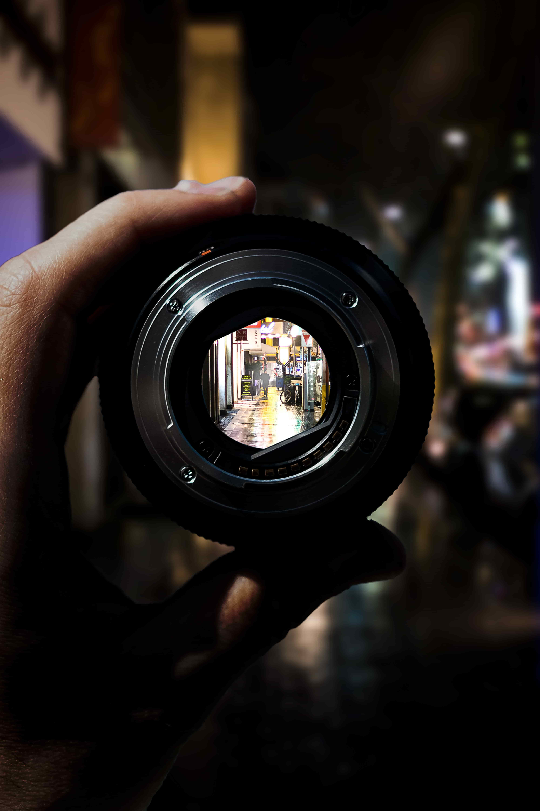

Exposing an Image
Exposure is the act of letting light into a camera and capturing the light either on film or on a digital sensor. Understanding exposure is the most fundamental aspect of taking a picture.
There are three factors that affect your image is exposed: shutter speed, aperture, and ISO. Take a look through the following tabs to learn how each of these impact the final picture. You can click on each image for a larger view.
 Cameras operate by opening a shutter to let light inside. How long that shutter remains open is known
as the shutter speed. It can be fast or slow depending on your needs.
Cameras operate by opening a shutter to let light inside. How long that shutter remains open is known
as the shutter speed. It can be fast or slow depending on your needs.
A fast shutter speed captures action, even if it happens in a fraction of a second. An athlete moves fast, but with the right technique, a photographer can still catch the goal-winning kick.
{kind=link}
A slow shutter speed leaves the shutter open and lets more light in. This means that actions will look smoothed-out in the image, such as this waterfall.
{kind=link}
While the shutter is open to let light in, the aperture of the lens closes partially to restrict how much light passes through and enters the camera. How much the aperture closes is represented by a number known as the f-stop. A larger number indicates a narrower opening, while smaller numbers mean that it closes less. The image to the left shows a high f-stop.
{kind=link}
 This image shows a low f-stop number. Besides letting more or less light into the camera, the f-stop number changes how much of the image is in focus at one time.
{kind=link}
A smaller f-stop number only allows a very thin slice of the image to be sharp and in focus. This effect is called having a narrow depth of field. Many photographers use this effect to draw a viewer's attention to a particular area of the picture.
{kind=link}
 A larger f-stop allows more of the image to stay sharp and in focus. When there isn't
one particular subject in the image, it can be useful to have a long depth of field, such as a sweeping landscape view.
A larger f-stop allows more of the image to stay sharp and in focus. When there isn't
one particular subject in the image, it can be useful to have a long depth of field, such as a sweeping landscape view.
To capture an image, a camera either uses film or a digital sensor, both of which have a reaction on exposure to light. ISO is a number that indicates how quickly that reaction takes place. ISO is an internationally standard number, so any camera or film you ever use will have the same numbers that mean the same thing.
{kind=link}
A high-ISO picture paired with a long shutter opening can even capture images of stars that might otherwise not be visible to the unaided eye.
{kind=link}
A lower ISO is typically all you need during the daytime, since the sun provide plenty of ambient light, even in the shade.
{kind=link}